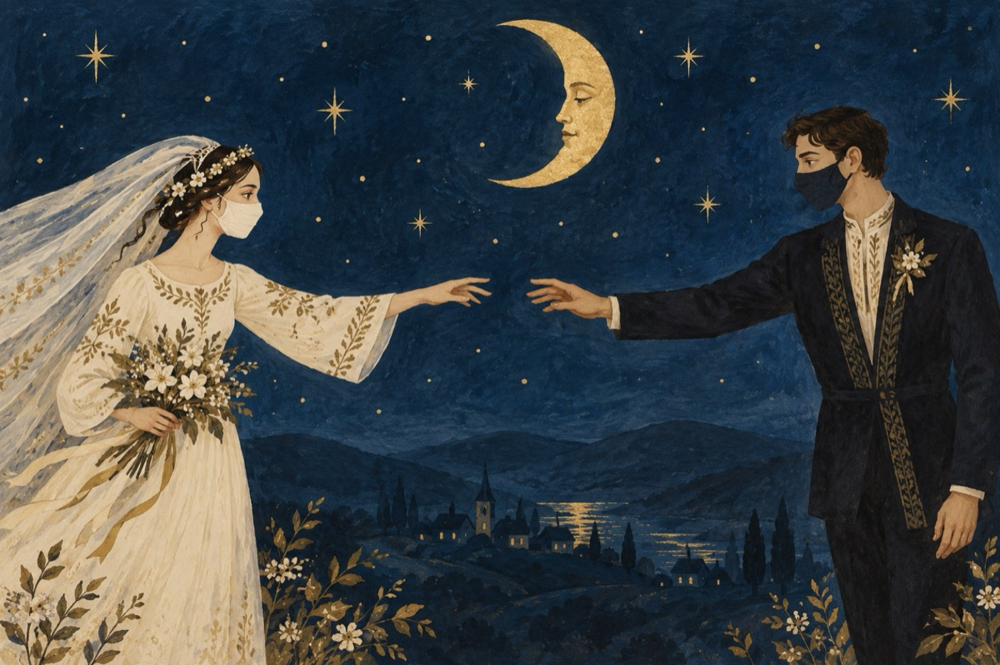

COVID-19
De-nsurat m-aș însura
Că a venit vremea mea
COVID-19 nu mă lasă
Să-mi iau nevastă și casă
Să pot face cununia
Și nunta cum se făcea
Să vină la nuntă lumea
Să pot bani a câștiga.
Să pot să-mi sărut mireasa
Fără mască pe figură
Și pe nașul, dar pe nașa
Să o pup direct pe gură!
Cu toți să ne-mbrățișăm
Și să ne strângem în brațe
Când pe muzică dansăm
Nu să stăm figuri de gheață
Cum vă-ntreb, acum a face?
Cu mireasa mea copii,
Distanța ne desparte
Nu-i destul prin simpatii
De s-ar isprăvi odată
Acest COVID nedorit
Să reluăm viața toată
Cum a fost de la-nceput!
Vasile Groza